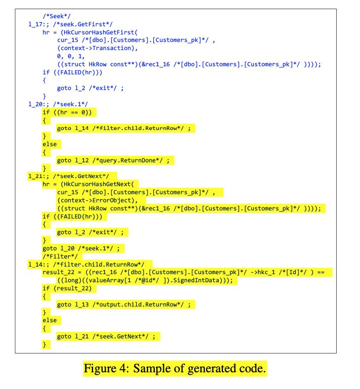
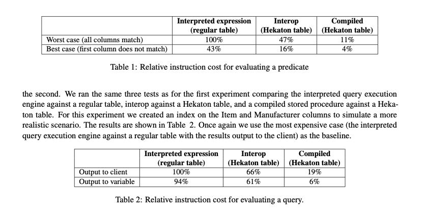

Compilation in the Microsoft SQL Server Hekaton Engine
主要是介绍了Hekaton引擎里面的编译部分。我觉得开头它这个设计考虑非常清晰：我们要在现有的OLTP上提升10X-100X的性能，但是实际测试下来发现从scalability（并发，设计latch-free的数据结构）和CPI（指令并行度）提升上最多只能得到3-4X的改进，所以必须在执行指令方面节省提升25X以上。
要到到指令节省25X以上，有两个方向：optimize index for main memory 以及 compilation. 适合内存的索引结构一方面可以节省IO时间，另外一方面有也可以节省disk<->io数据格式转换的时间。compilation则是希望通过在执行的时候，使用编译代码而不是解释代码。
这个编译过程非常直接，MAT（语义树）->PIT（执行树）->C. 然后整个C代码就是一个大的函数入口，里面就是由很多个goto block拼接起来，非常简单直接。

现在编译阶段只作用于两个节点：table creation 以及 store procedure. 存储过程这个比较好理解，table creation是因为我们需要知道table schema以及如何操作底层raw data，这个过程有点像protobuf生成C++代码的过程。
编译代码也有诸多限制比如：
- 只能支持部分选项（试想生成时候的options和执行时候的options不同的情况）
- schema bound. 如果存储过程还在使用这个表，那么表肯定不能删除
- 事务没有办法拆分执行，只支持BEGIN ATOMIC.
- 安全性，编译的代码不能包含比如user id或者是字段名称等等
测试效果是大约可以得到10X的性能提升
